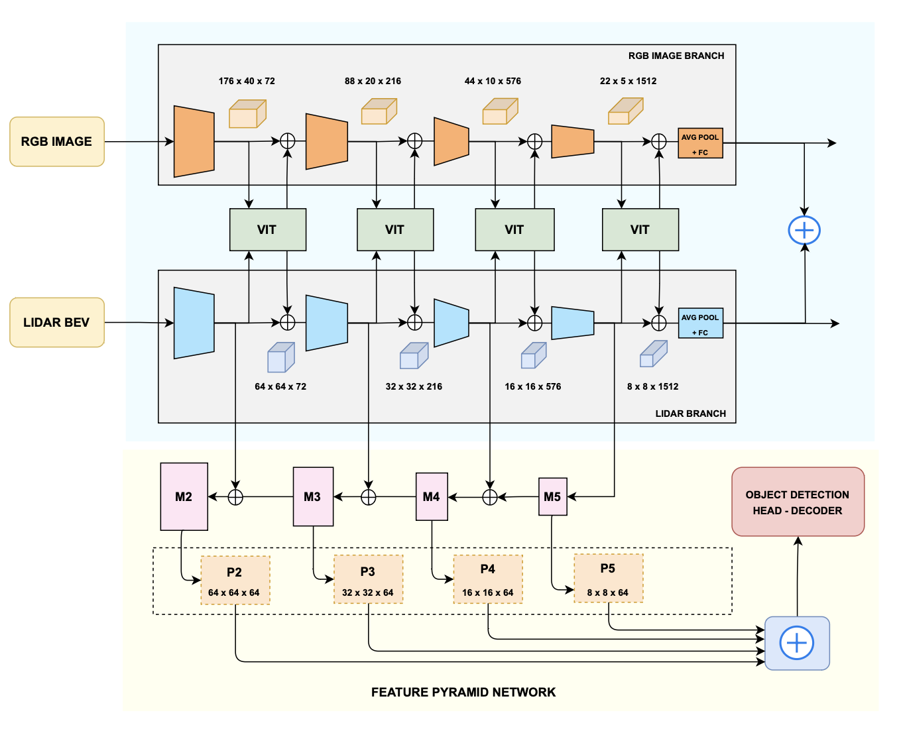

ViTFuser
Overview
ViTFuser [1] is an end-to-end autonomous-driving architecture that learns to navigate from front-camera images and LiDAR. Building on TransFuser [2], it uses Vision Transformers [3] at multiple feature resolutions to preserve global scene context during sensor fusion. A Feature Pyramid Network (FPN) [4] strengthens multi-scale object detection, helping the driving policy avoid traffic violations.

Why It Matters
Cameras provide rich semantic information such as traffic lights and road appearance, while LiDAR provides geometry and depth. Effective driving requires both. In TransFuser, pixel-level transformer attention requires aggressive feature-map downsampling; restoring those maps can discard detail and introduce noise. ViTFuser instead attends over image patches at four encoder stages, retaining more information while reducing computation.
ViTFuser uses 55.3 million parameters, about 67% fewer than TransFuser's 168 million, while reducing GPU memory use by 3x.
How It Works
- Multi-modal input. Three front-facing camera views are cropped and stitched into a 704 x 160 image. LiDAR points are projected into a 256 x 256 bird's-eye-view grid, with the navigation goal added as a third channel.
- Stage-wise fusion. Separate RegNet encoders [5] process RGB and LiDAR. Four ViT blocks fuse their feature maps at progressively coarser resolutions, allowing global interactions without collapsing the scene into one very small feature map.
- Waypoint prediction. A GRU decoder predicts four target waypoints, which a PID controller converts into steering and throttle commands.
- Interpretable supervision. Auxiliary decoders predict depth, semantic segmentation, HD maps, and vehicle bounding boxes. The FPN combines features across scales to improve the bounding-box head and reduce infractions.


Evaluation
We trained ViTFuser on the TransFuser dataset: approximately 230,000 frames from 3,500 routes across all eight public CARLA towns [6], covering varied weather and difficult scenarios such as junctions, roundabouts, cyclists, and pedestrians. We evaluated both ViTFuser variants on the Longest6 and Town05 benchmarks across three runs to account for simulator variability.
Driving Score combines route completion with an infraction penalty, so a higher score rewards both progress and safe behavior. The table shows the mean Driving Score across the three runs.
| Benchmark | TransFuser | ViTFuser | ViTFuser + FPN |
|---|---|---|---|
| Longest6 | 43.48 | 51.96 | 55.15 |
| Town05 Short | 87.48 | 90.04 | 91.07 |
| Town05 Long | 67.85 | 74.82 | 74.95 |
On Longest6, ViTFuser + FPN improved Driving Score by 11.67 points over TransFuser and raised the Infraction Score from 0.60 to 0.69. On Town05 Long, it reached 94.90% route completion.
Takeaway
The results separate the value of the two changes: multi-resolution ViT fusion provides the main gain over TransFuser, while the FPN adds a smaller but consistent improvement by strengthening object detection. The main limitation is that all training and evaluation were performed in CARLA using predefined urban scenarios and expert supervision, so performance does not establish real-world robustness.
References
- A. Chatterjee, P. Ajay Vikram, A. N. Bellala, T. Naga Tarun, B. Talawar, M. Vani, and J. Rajan, ViTFuser: Advancements in Global Context Understanding for Autonomous Vehicles , MIND 2024, CCIS 2736, pp. 128-140, Springer, 2026.
- K. Chitta, A. Prakash, B. Jaeger, Z. Yu, K. Renz, and A. Geiger, TransFuser: Imitation with Transformer-Based Sensor Fusion for Autonomous Driving , 2022.
- A. Dosovitskiy et al., An Image Is Worth 16x16 Words: Transformers for Image Recognition at Scale , ICLR 2021.
- T.-Y. Lin, P. Dollar, R. Girshick, K. He, B. Hariharan, and S. Belongie, Feature Pyramid Networks for Object Detection , CVPR 2017.
- I. Radosavovic, R. P. Kosaraju, R. Girshick, K. He, and P. Dollar, Designing Network Design Spaces , CVPR 2020.
- A. Dosovitskiy, G. Ros, F. Codevilla, A. Lopez, and V. Koltun, CARLA: An Open Urban Driving Simulator , CoRL 2017.